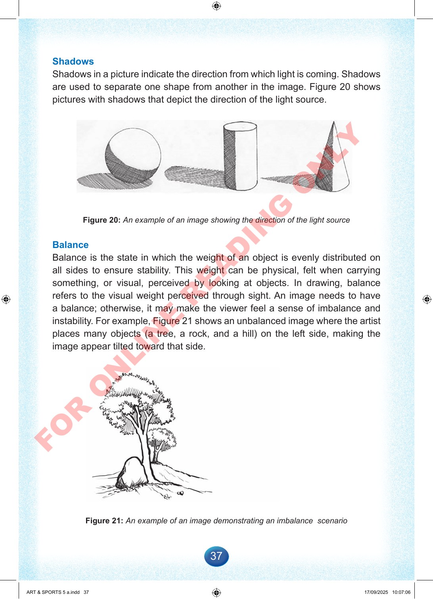

37
Shadows
Shadows
in
a
picture
indicate
the
direction
from
which
light
is
coming.
Shadows
are
used
to
separate
one
shape
from
another
in
the
image.
Figure
20
shows
pictures
with
shadows
that
depict
the
direction
of
the
light
source.
Figure
20:
An
example
of
an
image
showing
the
direction
of
the
light
source
Balance
Balance
is
the
state
in
which
the
weight
of
an
object
is
evenly
distributed
on
all
sides
to
ensure
stability.
This
weight
can
be
physical,
felt
when
carrying
something,
or
visual,
perceived
by
looking
at
objects.
In
drawing,
balance
refers
to
the
visual
weight
perceived
through
sight.
An
image
needs
to
have
a
balance;
otherwise,
it
may
make
the
viewer
feel
a
sense
of
imbalance
and
instability.
For
example,
Figure
21
shows
an
unbalanced
image
where
the
artist
places
many
objects
(a
tree,
a
rock,
and
a
hill)
on
the
left
side,
making
the
image
appear
tilted
toward
that
side.
Figure
21:
An
example
of
an
image
demonstrating
an
imbalance
scenario
ART
&
SPORTS
5
a.indd
37
ART
&
SPORTS
5
a.indd
37
17/09/2025
10:07:06
17/09/2025
10:07:06
F
O
R
O
N
L
I
N
E
R
E
A
D
I
N
G
O
N
L
Y